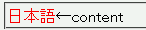

外部スタイルシートでcontentプロパティの値に日本語などの多バイト文字を指定すると文字化けして表示される。
外部スタイルシート「b001.css」：
@charset "Shift_JIS";
div.sample1:before {
content: "日本語";
color: red;
}
このHTML文書：
<div class="sample1">←content</div>
矢印の前に前景色が赤色の文字列「日本語」が表示されるはずです。
N7.02での表示
外部スタイルシート内でバックスラッシュを用いたエスケープを行えば文字化けしません。
@charset "Shift_JIS";
div.sample2:before {
content: "\65E5 \672C \8A9E";
color: red;
}
<div class="sample2">←content</div>
または、外部スタイルシートの文字コードをUCS-2にすることでも文字化けを回避できるそうです。しかし、それ以外の文字コードを使用した場合は@charsetを明示したとしてもエスケープが必要になります。
Safari1.0でこの不具合が発生するそうです。